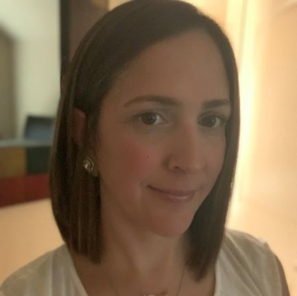

 My name is Carolina Berry, however I prefer to be called "Caro". Originally from Venezuela, adopted USA as my country since 2004 and moved to Houston in 2006.
I am a Computer Engineer with and extended experience in the Software area; from IT specialist, Software developer and Technical Consultant have been the most revelant roles I've played as an Engineer.
However, I am a woman, a mother of 4 kiddos which I decided to give a quality and quantity time to raise them until their school years. In those years, I reinvented myself to be productive while being able to be home and take care of my kids.
From lots of volunteer hours at my kids schools, as a Junior Achievement teacher, assistant of the Treasure for the Orchestra program at a High School, Uniform Chair of the Orchetra, librarian volunteer and many more hours helping my kids schools to success. But also, in two opportunities I adventured running a business from home.
My greatest passion is to cook. But desserts have an special part of my heart. Febraury 2018, started my Homemade Bakery, which later on was only dedicated to make French Macarons. In a full year I've made thousands of Macarons, diferents colors and flavors, I mastered to make Shaped Macarons as Sharks, Bunnies, Dears, Unicorns and few more; mainly resquested for Dessert tables at every kind of party.
As a professional, I was always having that internal question, when is the time to come back? What would I like to do if I come back? The time is now, and as I am such a creative person and love technologies, made me think that this Bootcamp to become a Web Developer is the best idea to "My coming back to the Professional World".
I cannot describe how much fun it has been so far, and can't wait to see how much more I'll be able to master in as a Web Developer.
You can find more about me at: My Linkedin profile